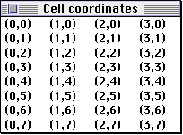

About the List Manager
The List Manager uses a list record to keep track of information about a list. In most cases your application can get or set the information in a list record using List Manager routines. When necessary, your application can examine fields of the list record directly.Each cell in a list can be described by a data structure of type
Cell:TYPE Cell = Point;TheCelldata type has the same structure as thePointdata type; however, the fields (horizontal and vertical coordinates) of a cell record have different meaning. The horizontal coordinate of a cell specifies its column number, and the vertical coordinate of a cell specifies the cell's row number. Note, however, that the first cell in a list is defined to be cell (0,0). So a cell with coordinates (3,4) is in the fourth column and fifth row. Thus you can visually identify a cell's coordinates using the formula (column-1, row-1).
Figure 4-17 illustrates a list in which each cell item's text is set to the coordinates of
the cell.Figure 4-17 Coordinates of cells

A list record is defined by theListRectdata type.TYPE ListRec = RECORD rView: Rect; {list's display rectangle} port: GrafPtr; {list's graphics port} indent: Point; {indent distance for drawing} cellSize: Point; {size in pixels of a cell} visible: Rect; {boundary of visible cells} vScroll: ControlHandle; {vertical scroll bar} hScroll: ControlHandle; {horizontal scroll bar} selFlags: SignedByte; {selection flags} lActive: Boolean; {TRUE if list is active} lReserved: SignedByte; {reserved} listFlags: SignedByte; {automatic scrolling flags} clikTime: LongInt; {TickCount at time of last click} clikLoc: Point; {position of last click} mouseLoc: Point; {current mouse location} lClikLoop: Ptr; {routine called by LClick} lastClick: Cell; {last cell clicked} refCon: LongInt; {for application use} listDefProc: {list definition procedure} Handle; userHandle: Handle; {for application use} dataBounds: Rect; {boundary of cells allocated} cells: DataHandle; {cell data} maxIndex: Integer; {used internally} cellArray: {offsets to data} ARRAY[1..1] OF Integer; END; ListPtr = ^ListRec; {pointer to a list record} ListHandle = ^ListPtr; {handle to a list record}The only fields of a list record that you need to be familiar with are therView,port,cellSize,visible, anddataBoundsfields.The
rViewfield specifies the rectangle in which the list's visible rectangle is located, in local coordinates of the graphics port specified by theportfield. Note that the list's visible rectangle does not include the area needed for the list's scroll bars. The width of a vertical scroll bar (which equals the height of a horizontal scroll bar) is 15 pixels.The
cellSizefield specifies the size in pixels of each cell in the list. Usually, you let the List Manager automatically calculate the dimensions of a cell. It determines the default vertical size of a cell by adding the ascent, descent, and leading of the port's font. (This is 16 pixels for 12-point Chicago, for example.) For best results, you should make the height of your application's list equal to a multiple of this height. The List Manager determines the default horizontal size of a cell by dividing the width of the list's visible rectangle by the number of columns in the list.The
visiblefield specifies which cells in a list are visible within the area specified by therViewfield. The List Manager sets theleftandtopfields ofvisibleto the coordinates of the first visible cell; however, the List Manager sets therightandbottomfields so that each is 1 greater than the horizontal and vertical coordinates of the last visible cell. For example, if a list contains 4 columns and 10 rows but only the first 2 columns and the first 5 rows are visible (that is, the last visible cell has coordinates (1,4)), the List Manager sets thevisiblefield to (0,0,2,5).The List Manager sets the
visiblefield using this method so that you can test whether a cell is visible within a list by calling QuickDraw'sPtInRectfunction with a given cell and the contents of this field. Also, this allows your application to compute the number of visible rows, for example, by subtracting thetopfield ofvisiblefrombottom.The
dataBoundsfield (located near the end of the list record) specifies the total cell dimensions of the list, including cells that are not visible. It works much like thevisiblefield; that is, itsrightandbottomfields are each 1 greater than the horizontal and vertical coordinates of the last cell in the list. For example, if a list contains 4 columns and 10 rows (that is, the last cell in the list has coordinates (3,9)), the List Manager sets thedataBoundsfield to (0,0,4,10).Your application seldom needs to access the remaining fields of the list record, although they are described here for your quick reference.
The
indentfield indicates the location, relative to the top-left corner of a cell, at which drawing should begin. For example, the default list definition procedure sets the vertical coordinate of this field to near the bottom of the cell, so that characters drawn with QuickDraw'sDrawTextprocedure appear in the cell.The
vScrollandhScrollfields are handles to the vertical and horizontal scroll bars associated with a list. You can determine which scroll bars a list contains by checking whether these fields areNIL.The
lActivefield isTRUEif a list is active orFALSEif it is inactive. You should not change the value in this field directly, but should use theLActivateprocedure to activate or inactivate a list.The
selFlagsfield specifies the algorithm that the List Manager uses to select cells in response to a click in a list. This field is described in more detail in "Customizing Cell Highlighting" on page 4-29.The
listFlagsfield indicates whether automatic vertical and horizontal scrolling is enabled. If automatic scrolling is enabled, then a list scrolls when the user clicks a cell but then drags the cursor out of the rectangle specified by therViewfield. For example, if a user drags the cursor below this field, the list scrolls downward. By default, the List Manager enables vertical automatic scrolling if your list has a vertical scroll bar; it enables horizontal scrolling if your list has a horizontal scroll bar. Your application can disable or enable automatic scrolling by using the following bit values:CONST lDoVAutoScroll = 2; {allows vertical autoscrolling} lDoHAutoScroll = 1; {allows horizontal autoscrolling}TheclikTimeandclikLocfields indicate the time at which the user last clicked the mouse and the local coordinates of the click. ThelastClickfield (located later in the list record) indicates the cell coordinates of the last click. You can access the value in thelastClickfield via theLLastClickfunction. If your application depends on the accuracy of the values in these fields, and if your application treats keyboard selection of list items identically to mouse selection of list items, then it should update the values of these fields after highlighting a cell in response to a keyboard event. (In particular, this is necessary if your application implements the anchor algorithm for extending cell selections with the arrow keys.)The
mouseLocfield indicates the current location of the cursor in local coordinates
(v,h). Ordinarily, you should use the Event Manager'sGetMouseprocedure to obtain this information, but this field may be more convenient to access from within a click-loop procedure (explained next).The
lClikLoopfield usually containsNIL, but your application may place a pointer to a custom click-loop procedure in this field. A click-loop procedure manages the
selection of list items and the scrolling of a list in response to a mouse click in the visible rectangle of a list. It is unlikely that your application will need to define its own click-loop procedures, because the List Manager'sLClickfunction provides a
default click-loop procedure that uses a robust algorithm to respond to mouse clicks. Your application needs to use a custom click-loop procedure only if it needs to perform some special processing while the user drags the cursor after clicking in a list. For more information on click-loop procedures, see "Click-Loop Procedures" on page 4-90.The
refConanduserHandlefields are for your application's use. You might, for example, use therefConfield to store the value of the A5 register, or to keep track of whether a list should be outlined. Typically, an application uses theuserHandlefield to store a handle to some additional storage associated with a list, but you can use the field in any way that is convenient for your application.The
listDefProcfield contains a handle to the code used by the list definition procedure.The
cellsfield contains a handle to data that stores the list contents. The handle is declared like this:TYPE DataArray = PACKED ARRAY[0..32000] OF Char; DataPtr = ^DataArray; DataHandle = ^DataPtr;Because of the way thecellsfield is defined, no list can contain more than 32,000 bytes of data. The List Manager slows down considerably when a list approaches this size, and the List Manager may fail if you attempt to store more data than this in a list.The List Manager uses the
cellArrayfield to store offsets to data in the relocatable block specified by thecellsfield.Your application will never need to access the
lReservedandmaxIndexfields.
- WARNING
- Your application should not change the
cellsfield directly or access the information in thecellArrayfield directly. The List Manager provides routines that you can use to manipulate the information in a list.